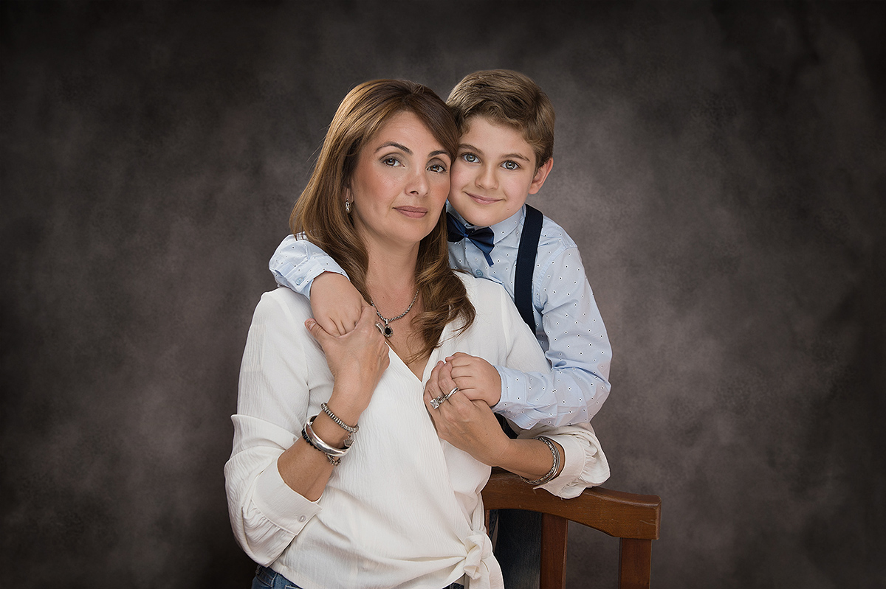
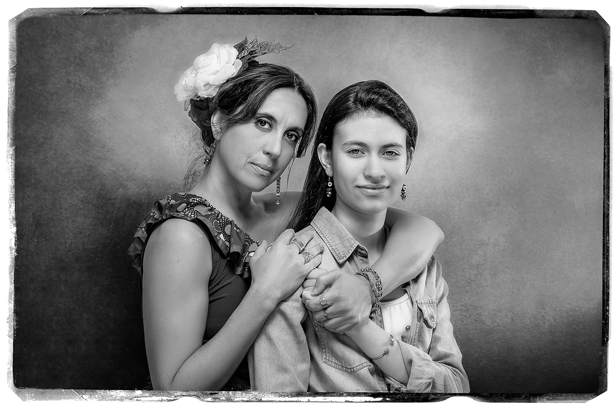
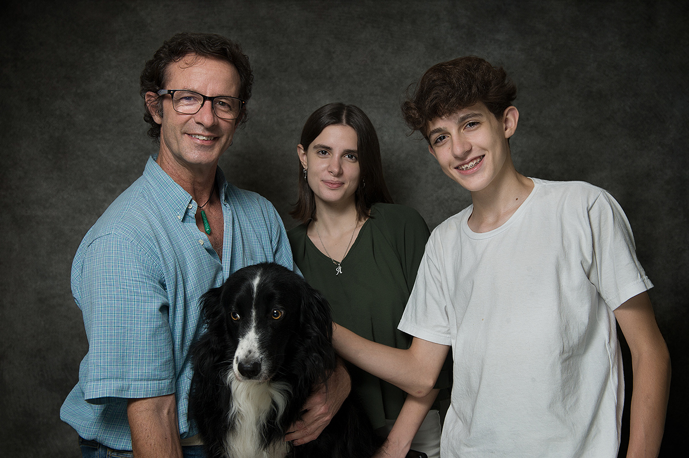

5 razones por las cuales deberías tener tu retrato si vives en Santiago del Estero
El éxito de las “selfies”, que no es más que tomar fotografías con nuestro teléfono móvil a nosotros mismos, se debe a que tenemos siempre el deseo de ser fotografiados de alguna forma. A la gran mayoría de la gente le gusta tener fotografías de sí mismos. Lo hacemos con el fin de tener recuerdos, y es de esa manera que usamos a la Fotografía como medio para capturar esos momentos que muy difícilmente volverán a repetirse.
¿Por qué conformarse con fotografías hechas con un teléfono móvil? Te mereces algo mejor que eso!! Veamos cuáles son las cinco razones por las cuales deberías reservar tu sesión de Retratos o Book conmigo! Nunca más serás quien eres hoy.

Es momento de retratar tu esencia
Los retratos son tu Legado, tu posteridad sabrá valorarlos
A todos nos gustaría tener un muy buen retrato de nosotros mismos. Pero tienes que tener en cuenta que no sos la única persona que quiere tener una fotografía espectacular. Un retrato tuyo es tu legado y va a sobrevivir una vez que te hayas ido.
Una sesión fotográfica te va a asegurar que tus hijos (y los hijos de tus hijos!), podrán ver quién eras vos y agradecerán enormemente esos recuerdos visuales. Pensá en tu Familia, en tus seres queridos, ¿no te gustaría que conservaran el mejor recuerdo de vos?
La gente elige auto expresarse de muchas maneras. Puede ser através del baile, una canción o el arte, pero todos deseamos darle al mundo un vistazo de nuestra propia alma. El retrato también es una forma de expresión. Un retrato tuyo es la oportunidad ideal para expresar lo que con palabras se hace difícil.

Tu personalidad y tu mirada única plasmadas en un retrato
Ser fotografiado se relaciona con el sentido de la importancia
Muy de vez en cuando, las personas no se sienten dignas. Es decir, creen que no merecen ser tratados bien o que las necesidades de los demás son más importantes que las suyas.
En realidad, la verdad es lo opuesto a esto. Vos tienes valor y sos digno. Cuando te pones delante de la cámara demuestras que eres valioso como persona y que mereces sentirte importante (porque lo eres!). Tener un retrato tuyo es enriquecedor. Confiá en mí, lo vales.

Tu familia inmortalizada en una sesión fotográfica
No necesitas una razón legítima para no tener tu propio retrato
Cuando hablo sobre el retrato fotográfico con otras personas, siempre se habla de lo mismo. La gente dice con frecuencia que no tiene tiempo suficiente, dinero, o energía para hacerse retratar.
Pero en realidad no tienes una razón legítima para no tener un retrato tuyo. El dinero va y viene, el tiempo pasa. Tus excusas son sólo eso, excusas.